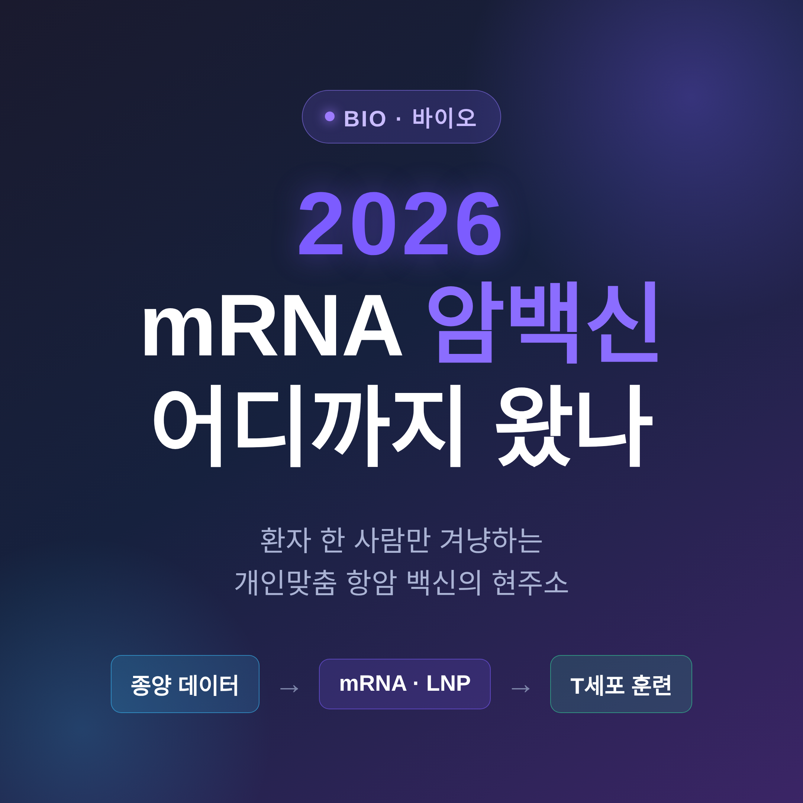
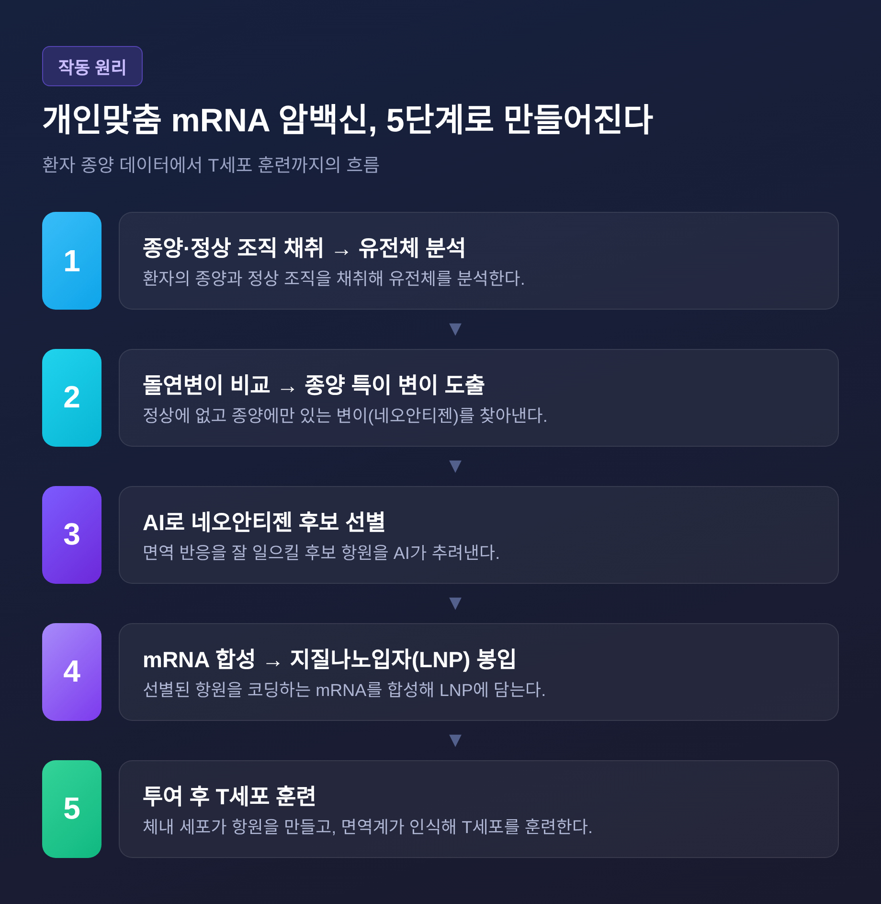
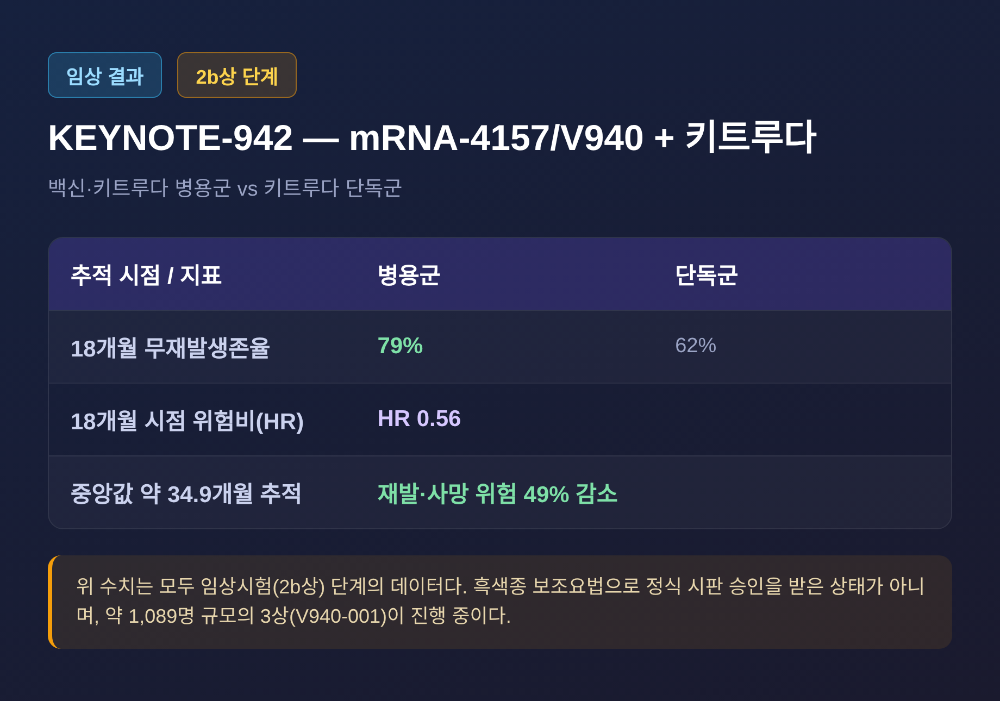
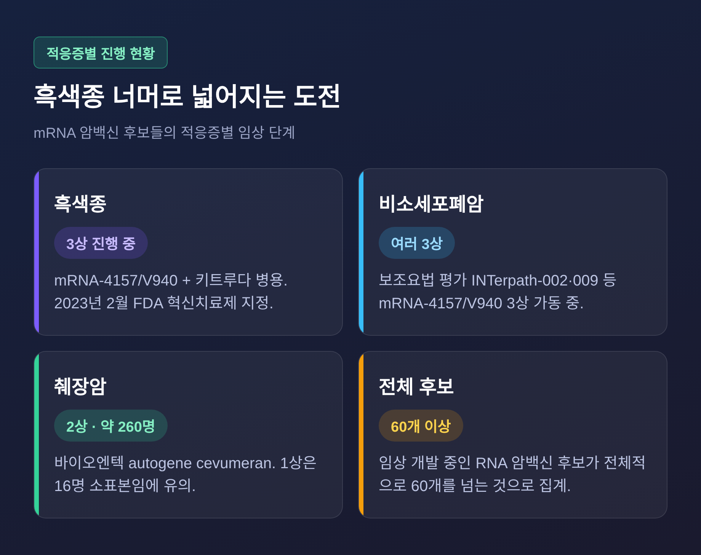

이번 글에서는 2026년 현재 mRNA 개인맞춤 암백신이 어디까지 왔는지 정리해 보겠습니다.
환자 한 사람의 종양만 겨냥하는 백신이라는 점, 그리고 아직은 임상시험 단계라는 점을 함께 짚겠습니다.
이 글은 일반 정보 정리이며, 의학적 자문이 아닙니다. 아래 후보 물질들은 대부분 임상시험 단계로, 정식 시판 승인 전입니다. 진단·치료에 관한 판단은 반드시 의료진과 상의하시길 권합니다.
원리는 의외로 단순합니다.
정상 세포에는 없고, 환자의 종양에만 있는 단백질 조각이 있습니다.
이를 네오안티젠이라 부릅니다.
면역계는 이 조각을 '암 고유의 표적'으로 인식할 수 있습니다.
개인맞춤 백신은 바로 이 환자별 돌연변이를 겨냥해, 암을 공격하는 T세포 반응을 활성화하는 것을 목표로 합니다.
제작 흐름은 다섯 단계로 정리됩니다.
환자의 종양과 정상 조직을 채취해 유전체를 분석하고, 돌연변이를 비교해 종양 특이 변이를 찾습니다.
그다음 AI가 면역 반응을 잘 일으킬 후보를 선별하고, 그 항원을 코딩하는 mRNA를 합성해 지질나노입자에 담습니다.
투여하면 체내 세포가 항원을 만들고, 면역계가 이를 인식해 T세포를 훈련합니다.
예전엔 항암 치료가 '모두에게 같은 약'이었습니다.
지금은 '한 사람만을 위한 백신'을 만드는 방향으로 움직이고 있습니다.

현재 가장 앞서 있는 분야는 흑색종입니다.
모더나와 머크가 함께 개발하는 mRNA-4157(V940)이 그 중심에 있습니다.
완전 절제된 고위험 흑색종 환자를 대상으로, 면역관문억제제 키트루다와 병용하는 방식입니다.
핵심 근거는 2b상 KEYNOTE-942 시험입니다.
이 시험에서 백신과 키트루다 병용군은 키트루다 단독군 대비 재발 또는 사망 위험을 유의하게 줄였습니다.
수치는 추적 시점에 따라 다릅니다.
18개월 시점에서는 무재발생존율이 병용 79% 대 단독 62%, 위험비 0.56으로 보고됐습니다.
중앙값 약 34.9개월을 추적한 데이터에서는 재발 또는 사망 위험이 49% 감소한 것으로 나타났습니다.
이 결과를 바탕으로 약 1,089명 규모의 3상(V940-001)이 진행되고 있습니다.
2023년 2월에는 FDA로부터 혁신치료제 지정도 받았습니다.

다만 짚어둘 점이 있습니다.
위 결과는 모두 임상시험 단계의 데이터입니다.
흑색종 보조요법으로 아직 정식 시판 승인을 받은 상태가 아닙니다.
흑색종 너머로도 시험이 이어지고 있습니다.
바이오엔텍의 autogene cevumeran은 췌장암에서 주목받습니다.
절제된 췌장암 환자 대상 1상에서, 16명 중 8명에게 면역 반응이 유도됐습니다.
그 반응은 투여 후 최대 3년까지 지속됐습니다.
면역 반응자의 75%는 3년 시점에 재발이 없었던 반면, 비반응자의 87.5%는 종양이 재발했습니다.
이 물질은 현재 약 260명 규모의 2상으로 넘어갔습니다.
다만 1상은 16명이라는 작은 표본이라는 점은 분명히 기억해야 합니다.
폐암에서도 mRNA-4157/V940의 여러 3상이 가동 중입니다.
비소세포폐암 보조요법을 평가하는 INTerpath-002, INTerpath-009 등이 그것입니다.
임상 개발 중인 RNA 암백신 후보는 전체적으로 60개를 넘는 것으로 집계됩니다.

기대가 큰 만큼, 현실의 벽도 분명합니다.
먼저 제조입니다.
개인맞춤 백신 생산 기간은 과거 약 9주에서 4주 미만으로 단축됐습니다.
빨라졌습니다만, 환자 한 사람을 위해 매번 새로 만들어야 한다는 본질은 그대로입니다.
비용도 큰 장벽입니다.
자료에 따라 환자 1인당 10만 달러를 넘고, 일부는 약 10만~30만 달러까지 보고됩니다.
승인 시점도 아직 확정되지 않았습니다.
규제 제출은 2026년에 예상된다는 보도가 있고, 첫 승인 전망은 자료에 따라 2026년 말~2027년과 2029년경으로 갈립니다.
어느 쪽이든 핵심 3상 결과에 좌우된다는 점은 같습니다.
무엇보다 장기 생존이나 전체생존 같은 확정적 3상 결과는 아직 공개되지 않았습니다.
그래서 지금의 효능은 '특정 임상에서 재발 지연·면역 반응 유도'로 한정해 이해하는 편이 정확합니다.
정리하면 이렇습니다.
mRNA 개인맞춤 암백신은 분명한 진전을 보였지만, 아직 완성된 치료법은 아닙니다.
— "유망하나, 입증은 진행 중이다."
몇 해 뒤 이 글을 다시 읽을 때, 그 한 줄이 어떻게 바뀌어 있을지 조용히 지켜보려 합니다.